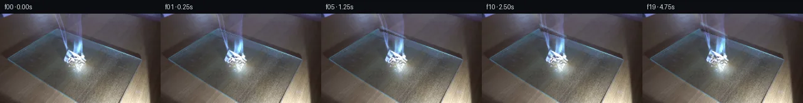

![首帧]()

Round 00
2026-11-05T15:54:12.909767+00:00像素候选变化代码 +245/−0inspection 更新
pixels c4a65e0ce89e6e7d · code 7c3d3b9e4dcd6c2b
查看本轮 generate.py 真实 diff
--- previous/generate.py
+++ current/generate.py
@@ -0,0 +1,245 @@
+"""Five seconds of local, deterministic, layered pixel animation.
+No model, remote asset, reference image, or rendering engine is used.
+"""
+from pathlib import Path
+import json
+import numpy as np
+from PIL import Image, ImageDraw
+from scipy.ndimage import gaussian_filter, map_coordinates
+from artifact_io import save
+
+ROOT = Path(__file__).resolve().parent
+W, H, FPS, N = 256, 144, 4, 20
+src = np.asarray(Image.open(ROOT / 'first_frame.png').convert('RGB'))
+assert src.shape == (H, W, 3)
+original = src.astype(np.float64)
+y, x = np.mgrid[:H, :W].astype(float)
+rng = np.random.default_rng(141)
+
+def smooth(a, b, q):
+ z = np.clip((q-a)/(b-a), 0, 1)
+ return z*z*(3-2*z)
+
+def gauss(cx, cy, sx, sy):
+ return np.exp(-.5*((x-cx)/sx)**2-.5*((y-cy)/sy)**2)
+
+# Estimate the baseline glass/wood color cast from unoccluded row flanks.
+# This extracts the cool luminous component while retaining underlying grain.
+board_edge = 25 + (x-88)*48/137
+board = y >= board_edge
+bg_br = np.median(original[:,76:85,2]-original[:,76:85,0],axis=1)
+bg_gr = np.median(original[:,76:85,1]-original[:,76:85,0],axis=1)
+bg_br = gaussian_filter(bg_br, 1.0)
+bg_gr = gaussian_filter(bg_gr, 1.0)
+wood_br = np.median(original[:45,145:155,2]-original[:45,145:155,0],axis=1)
+wood_gr = np.median(original[:45,145:155,1]-original[:45,145:155,0],axis=1)
+wood_br = np.pad(gaussian_filter(wood_br,1.2),(0,H-45),mode='edge')
+wood_gr = np.pad(gaussian_filter(wood_gr,1.2),(0,H-45),mode='edge')
+cast_br = np.where(board, bg_br[:,None], wood_br[:,None])
+cast_gr = np.where(board, bg_gr[:,None], wood_gr[:,None])
+plume_center = 108 + .18*y
+plume_half = 23 - .08*y
+plume_mask = (1-smooth(plume_half-3,plume_half+1,abs(x-plume_center))) * (1-smooth(59,67,y))
+blue_excess = np.maximum(original[:,:,2]-original[:,:,0]-cast_br-3, 0)
+green_excess = np.maximum(original[:,:,1]-original[:,:,0]-cast_gr-1,0)
+luminous = np.stack([.60*blue_excess,.60*blue_excess+green_excess,1.60*blue_excess],axis=2)
+luminous = np.minimum(luminous, original*.78)*plume_mask[:,:,None]
+# No broad texture removal: the static layer is an exact per-pixel remainder.
+base = original-luminous
+
+# Original fold texture is preserved inside a hand-measured geometric silhouette.
+mask_image=Image.new('L',(W*4,H*4),0)
+draw=ImageDraw.Draw(mask_image)
+fold_poly=[(109,59),(115,61),(120,63),(124,66),(129,66),(133,68),(135,72),(135,75),(137,78),(132,80),(127,77),(122,79),(115,78),(110,79),(106,77),(103,75),(102,71),(105,68),(105,63)]
+draw.polygon([(int(a*4),int(b*4)) for a,b in fold_poly],fill=255)
+paper_mask=np.asarray(mask_image.resize((W,H),Image.Resampling.LANCZOS)).astype(float)/255
+paper_mask *= smooth(100,150,original.mean(axis=2))
+
+# Advected multiscale random fields supply coherent smoke texture.
+noise = rng.normal(size=(512,384))
+cloud = gaussian_filter(noise, 5.0)
+cloud = (cloud-cloud.mean())/cloud.std()
+fine = gaussian_filter(noise, 1.1)
+fine = (fine-fine.mean())/fine.std()
+ash_noise = gaussian_filter(rng.random((H,W)), .35)
+ash_noise = .6+.8*ash_noise
+
+# Flame flicker is correlated in time, with an exact initial condition.
+knot_times=np.arange(-1,7,.125)
+knot_values=gaussian_filter(rng.normal(size=len(knot_times)),1.0)
+knot_values/=knot_values.std()
+flicker_zero=float(np.interp(0,knot_times,knot_values))
+def flicker(t):
+ return .045*(np.interp(t,knot_times,knot_values)-flicker_zero)+.07*np.sin(9.7*t)+.035*np.sin(17.3*t)
+
+# The support is deliberately bounded; the rest of the scene is pixel-exact.
+plume_support=(x>=82)&(x<=151)&(y<=81)
+reflection_support=(x>=97)&(x<=147)&(y>=76)&(y<=116)
+effect_support=plume_support | reflection_support
+
+frames=[src.copy()]
+metrics=[]
+smoke_history=[]
+for i in range(1,N):
+ t=i/FPS
+ startup=smooth(0,1.25,t)
+ hotness=flicker(t)
+ # Move the supplied luminous structure with a vertically increasing velocity;
… diff truncated; 158 more lines …